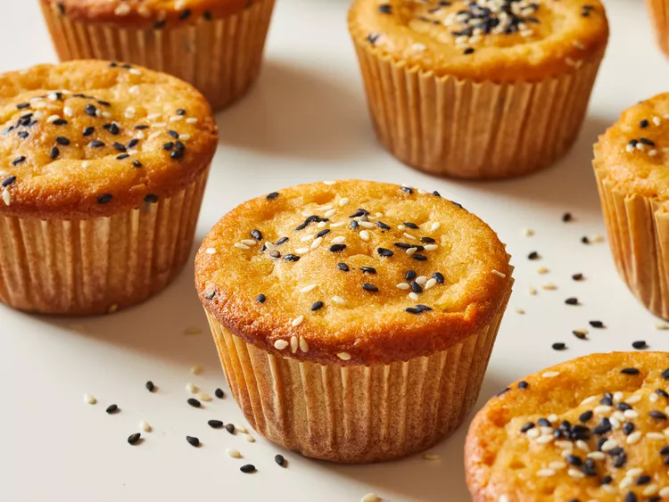

Mochi Muffins

Description
These yummy mochi muffins made with rice flour and coconut milk make a great breakfast, snack, or casual dessert.
Ingredients
- Sweet rice flour
- Sugars
- Baking powder
- Salt
- Coconut milk
- Eggs
- Butter
- Vanilla
- Maple syrup
- Sesame seeds
Steps
- Whisk the dry ingredients together in one bowl and the wet ingredients in another.
- Add the dry mixture to the wet mixture.
- Spoon the batter into prepared muffin cups and sprinkle with sesame seeds.
- Bake the muffins until a toothpick comes out clean.